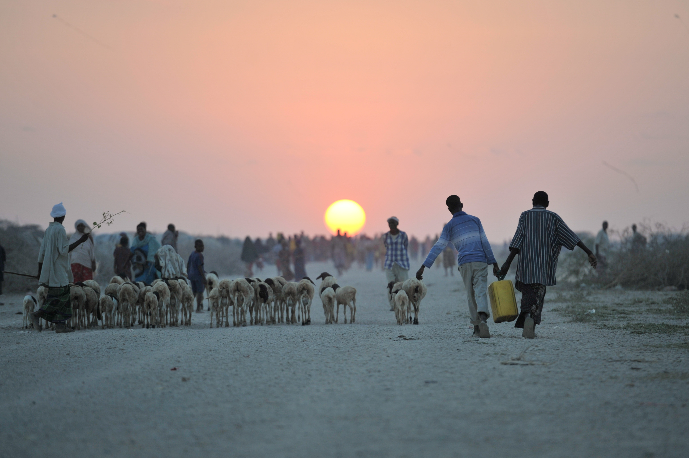

HotSpots H2O, April 23: Spotlight on South Sudan
Conflict with anti-government rebels has aggravated water shortages in a country where public services are already in short supply.
Millions in the country lack access to safe drinking water.Fighting has damaged infrastructure and blocked trade, hampering the operation and maintenance of water systems.In much of the country, water and sanitation infrastructure does not exist, and residents rely on water from swamps, ditches, and hand-dug wells.Outbreaks of waterborne diseases, such as cholera and diarrhea, are common.
South Sudan gained independence from Sudan in 2011.Just two years later, President Salva Kiir Mayardit terminated his vice president Riek Machar amid accusations of an attempted coup.Machar’s dismissal was the catalyst for South Sudan’s ongoing civil war, a clash between government-loyal forces and rebel factions sympathetic to Machar.
'I am trying hard to persuade people to wash their hands at the right time, drink borehole water – or at least boil the swamp water – to save their lives.'–Thokuang, a South Sudanese disease prevention specialist, in reference to educating people on the risks of dirty water and poor sanitation.
50 percent Proportion of people in South Sudan who do not have reliable access to clean drinking water.The country’s population is roughly 12 million.
90 percent Proportion of people in South Sudan who do not have access to proper sanitation.An estimated 61 percent practice open defecation.
4 million Estimated number of people who have been displaced by the South Sudanese civil war.Half have fled to neighboring countries.
800 percent Amount of economic inflation in the country in 2017.South Sudan is one of the poorest nations in the world.
6 hours Length of time that residents of Buong, South Sudan, queued for water each day before aid organizations repaired the town’s water infrastructure.Lengthy water queues are routine in South Sudan.
20,000 Number of suspected cholera cases during the country’s most recent cholera outbreak, which lasted from June 2016 to December 2017.
A report by German development organization Sign of Hope warns that oil production in northern South Sudan could be contaminating the water supply of up to 600,000 people, posing yet another threat to clean water.The group alleges that oil fields owned by Malaysia’s Petronas have leaked barium, lead, and other chemicals into local water sources.Residents living near the oil fields describe increases in skin problems, diarrhea, and other illnesses.
South Sudan earns most of its revenue from oil, so the government has made little effort to protect local populations from the risks of oil production.Petronas, the oil company highlighted in Sign of Hope’s report, 'strongly denies' the water contamination allegations.
Improvements to water access in South Sudan are slow.Several aid organizations are working to drill boreholes, repair infrastructure, and educate the population about the importance of clean water, but these efforts are sorely underfunded.One major breakthrough is the proliferation of anti-cholera vaccines, which played an important role in halting South Sudan’s latest outbreak.The risk of waterborne disease remains high, however, especially with the upcoming rainy season.
600,000 people in South Sudan said to be at risk from contaminated drinking water
(Deutsche Welle) In South Sudan, Oxfam races the rains to save lives
(Relief Web) The people’s humanitarians of South Sudan: Saving lives on the front line
(Relief Web) South Sudan conflict, hunger: Facts, FAQs, and how to help
(World Vision) South Sudan declares the end of its longest cholera outbreak
(WHO) UNICEF South Sudan WASH Situation Overview – March 2018
(UNICEF)
Posted On: 2018-04-23T00:00:00
Posted By: Kayla Ritter

Content Date: 2018-04-23
Download Date: 2021-05-12
Document ID: L0C04B488